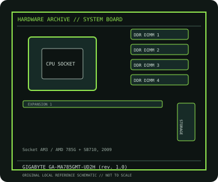

[ INDIVIDUAL COMPONENT // MOTHERBOARDS ]
GIGABYTE GA-MA785GMT-UD2H (rev. 1.0)
GA-MA785GMT-UD2H (rev. 1.0): Socket AM3 / AMD 785G + SB710, 2009; revision-aware Socket motherboard specifications, CPU/BIOS qualification, board size, memory, expansion, storage and I/O.

IDENTIFICATION: PCB revision 1.0. Confirm the exact silkscreen, revision and firmware on the physical board; near-name variants can use different BIOS files and connectors.
Specifications
| Catalog subcategory | AMD Socket platforms |
|---|---|
| Exact board / model | GA-MA785GMT-UD2H (rev. 1.0) — PCB revision 1.0 |
| Platform and chipset | Socket AM3 / AMD 785G + SB710, 2009; AMD 785G northbridge with SB710 southbridge and integrated ATI Radeon HD 4200 graphics. |
| CPU and BIOS support | Socket AM3; Phenom II and Athlon II CPU families appear on GIGABYTE’s revision-specific CPU list. This board does not support AM3+ FX CPUs. |
| Memory | Four DDR3 DIMM sockets, dual-channel, up to 16 GB; rated speed depends on CPU and memory profile. |
| Board size / form factor | Micro-ATX, 244 × 244 mm. |
| Expansion and storage | One PCIe 2.0 x16, one PCIe x1 and two PCI slots; five SATA 3 Gb/s ports, one eSATA and one PATA channel. |
| Rear I/O and compatibility | Integrated VGA, DVI-D and HDMI outputs, Gigabit Ethernet, IEEE 1394, USB 2.0, 8-channel audio and PS/2. AM3 CPUs and DDR3 only; do not install AM3+ FX processors. Check the rev. 1.0 CPU support/BIOS list, supported TDP and DIMM compatibility before assembly. |
Compatibility and revision notes
AM3 CPUs and DDR3 only; do not install AM3+ FX processors. Check the rev. 1.0 CPU support/BIOS list, supported TDP and DIMM compatibility before assembly.
Before installation, compare the physical board and revision against the manufacturer manual. Check socket condition, CPU power requirements, cooler/chassis clearance, DIMM population order, power connectors and any shared PCIe or SATA lanes. Update firmware only with the exact model’s supported procedure.
Preservation and repair
Record the PCB revision, BIOS identifier, serial/date code, installed CPU and memory, accessories, known faults, repairs and test conditions. Use ESD-safe handling and inspect for socket damage, corrosion, leaking capacitors and loose conductive hardware before power-up.
Sources & further reading
- GIGABYTE GA-MA785GMT-UD2H (rev. 1.0) specificationsManufacturer board specification page for revision 1.0.
- GIGABYTE GA-MA785GMT-UD2H (rev. 1.0) supportManufacturer CPU compatibility/BIOS resources and manual for this revision.
Manufacturer documentation is authoritative for supported CPUs, minimum BIOS, memory qualification and revision-specific wiring. Do not transfer compatibility claims or firmware between similar model names.